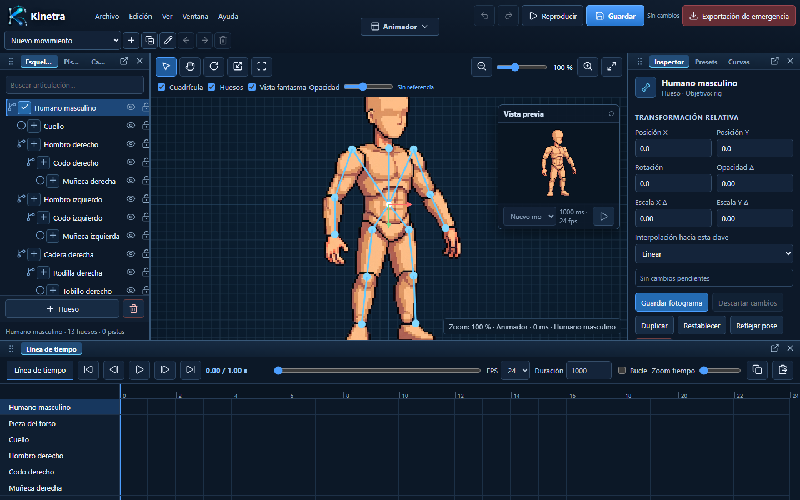

01
Importa y ensambla
Carga imágenes o un PSD por capas, organiza cada pieza y alinea el personaje sobre el lienzo.
Sprites modulares · capas realesAnimación 2D, directamente en tu navegador
Ensambla sprites, construye un rig y anima con cinemática inversa en un espacio de trabajo creado para producción 2D ágil.

Demo de producto · 75 segundos
Una vista rápida del paso que convierte arte modular en un personaje preparado para animación.
Un flujo sin saltos
La misma herramienta acompaña la construcción, el movimiento y la salida final del personaje.
Carga imágenes o un PSD por capas, organiza cada pieza y alinea el personaje sobre el lienzo.
Sprites modulares · capas realesDefine una jerarquía de huesos, vincula las piezas y ajusta cadenas IK para posar con naturalidad.
Jerarquía · pivotes · cinemática inversaCrea clips, guarda fotogramas clave y exporta un paquete autocontenido listo para integrar.
Timeline · múltiples clips · runtime webHecho para iterar
Kinetra reúne las herramientas esenciales de un flujo de animación esquelética sin obligarte a instalar un entorno pesado ni separar el trabajo entre varias aplicaciones.
Explorar el editorPNG, WebP, JPEG y documentos PSD con sus capas.
Huesos, pivotes, jerarquías y asociación de sprites.
Cadenas articuladas para ajustes más rápidos y naturales.
Timeline, fotogramas clave, curvas y vista previa.
Rig, capas, recursos y clips viajan en un mismo paquete.
Pensado para crear
Una base compacta para quienes necesitan convertir ilustraciones en movimiento reutilizable.
Prepara personajes 2D y conserva sus clips en un formato portable para la web.
Da movimiento a personajes divididos por piezas sin redibujar cada fotograma.
Prueba poses, ciclos y variaciones antes de llevar el resultado a una producción mayor.
Preview pública · v0.13.0
Abre Kinetra, elige una plantilla o importa tus propias piezas y empieza a construir.